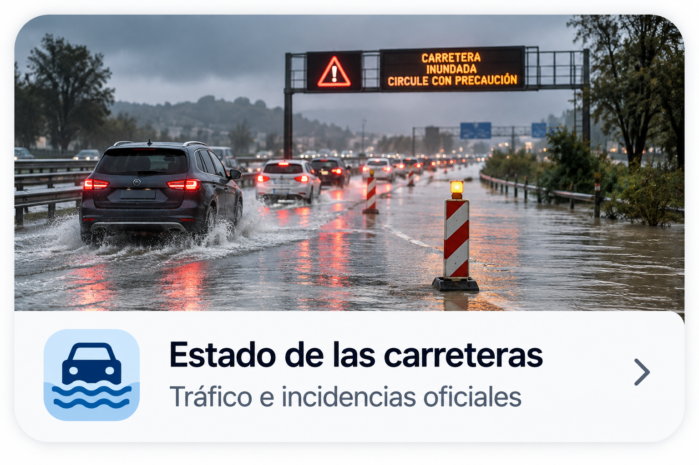

Servicios oficiales y afectaciones en tiempo real
PROTECCIÓ CIVIL · METEOCAT
Consultando fuentes oficiales…

Estado de las carreteras
Consulta incidencias, cortes y afectaciones antes de desplazarte.
Consultar estado de las carreteras →Servicios oficiales y afectaciones en tiempo real
PROTECCIÓ CIVIL · METEOCAT

Consulta incidencias, cortes y afectaciones antes de desplazarte.
Consultar estado de las carreteras →